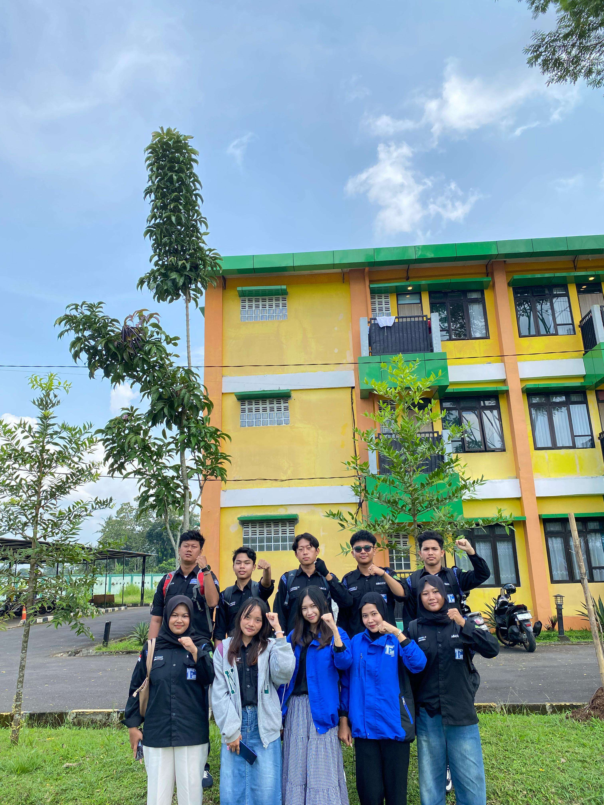

Informatika 25 / LKM
LATIHAN
KEPEMIMPINAN
Mahasiswa.
Membangun narasi baru dalam kepemimpinan teknologi. Eksklusivitas dalam pemikiran, inklusivitas dalam kolaborasi.


Visioner
Melihat apa yang belum terlihat, merancang masa depan dengan presisi tinggi.
Resiliensi
Ketangguhan dalam menghadapi dinamika perubahan dunia informatika.
Inovasi
Melampaui standar untuk menciptakan solusi yang berdampak luas.
ANGGOTA
kelompok
Wajah-wajah di balik inovasi Kelompok 10 Informatika 25.
Pendamping
Teh Sandria
Pendamping Kelompok 10 Angkatan 25
Teh Yura
Pendamping Kelompok 10 Angkatan 25
MATERI
Yang Disampaikan

Analisis &
Pengembangan
Masyarakat
Pengertian
Analisis dan Pengembangan Masyarakat adalah pendekatan sistematis untuk memahami kebutuhan komunitas lokal dan merancang intervensi yang berkelanjutan. Pendekatan ini menekankan partisipasi aktif warga dalam proses pengembangan, dengan fokus pada pemberdayaan kapasitas lokal dan kolaborasi antar pemangku kepentingan.
Tujuan & Komponen
Memberikan pemahaman mendalam tentang metodologi pengembangan masyarakat yang efektif dan berkelanjutan.
Identifikasi aspirasi dan masalah utama warga melalui survei partisipatif.
Pemetaan kemampuan, modal sosial, dan aset lokal yang tersedia.
Analisis relasi antar kelompok dan potensi dukungan eksternal.
Identifikasi hambatan, tantangan, dan kendala implementasi.
Metode Analisis
-
01Survei Partisipatif
-
02Analisis SWOT
-
03Diskusi Kelompok
Indikator Sukses
- Partisipasi komunitas meningkat signifikan
- Solusi relevan konteks lokal
- Dampak sosial terukur & berkelanjutan
Tahapan Implementasi
"Pengembangan masyarakat yang efektif memerlukan kombinasi antara perencanaan yang matang, eksekusi yang disiplin, dan kemampuan adaptasi terhadap perubahan."

Kepemimpinan Dasar
Pengertian
Kepemimpinan dasar merupakan fondasi utama dalam pengembangan kemampuan memimpin. Konsep ini mencakup pemahaman tentang peran pemimpin, teori-teori kepemimpinan klasik dan modern, serta karakteristik yang harus dimiliki oleh seorang pemimpin efektif dalam berbagai konteks organisasi.
Tujuan & Komponen
Materi ini bertujuan untuk membekali peserta dengan pengetahuan fundamental tentang kepemimpinan dan keterampilan dasar yang diperlukan untuk menjadi pemimpin yang efektif.
Konsep Pemimpin: Perbedaan antara pemimpin dan manajer, serta peran strategis pemimpin Teori Kepemimpinan: Kajian teori klasik (trait, behavioral) dan teori modern (situasional, transformational) Karakteristik Pemimpin: Integritas, visi, empati, dan kemampuan decision making Pembangunan Visi & Misi: Teknik merumuskan visi jangka panjang dan misi operasional.
Pengembangan kesadaran diri dan emotional intelligence. Pelatihan komunikasi efektif dan public speaking. Latihan pengambilan keputusan di bawah tekanan. Pembentukan pola pikir strategis dan visioner.
Pengaturan nada, jeda, dan penekanan kata.
Teknik mengelola kecemasan saat berbicara di depan umum.
Metode Latihan
-
01Practice in Front of Mirror
-
02Recording & Self Review
-
03Storytelling Workshop
Indikator Sukses
- Pesan tersampaikan dengan jelas
- Audiens merasa terinspirasi
- Kepercayaan diri yang stabil
Tahapan Persiapan
"Kata-kata memiliki kekuatan untuk mengubah dunia jika disampaikan dengan ketulusan dan teknik yang tepat."

Manajemen Aksi
Pengertian
suatu model pernyataan sikap penyuaraan pendapat opini atau tuntutan yg dilakukan dengan jumlah masa yg banyak dgn teknik tertentu untuk mendapat perhatian dari pihak ya dituju. Demonstrasi (aksi) dilatarbelakangi oleh matinya jalur penyampaian aspirasi atau buntunya metode dialog. Landasan hukum : UU No. 9/1998 tentang mekanisme penyampaian Pendapat di muka umum.
Mekanisme & Tahapan
Keputusan aksi diambil melalui analisis SWOT yang mendalam untuk memastikan strategi yang tepat sasaran.
Identifikasi isu dan analisis kelayakan aksi secara kolektif.
Konsolidasi perangkat aksi dan pembagian peran strategis.
Matangkan skenario, rute, dan mitigasi risiko di lapangan.
Eksekusi rencana dengan disiplin komando dan koordinasi ketat.
Perangkat Aksi
Koordinator Lapangan
Agitator
Tim Humas & Medis
Orator
Logistik
Radar Tim
Negosiator
Tim Kreatif
Dokumenter
Pertimbangan Utama
-
1
Tema / Isu
Relevansi dan urgensi materi aksi.
-
2
Target Terukur
Teknis, pencapaian, dan jumlah massa.
-
3
Skenario Lapangan
Rute aksi dan penempatan tokoh orator.
Format Aksi
Aksi diam, aksi bisu, dan teatrikal yang mengedepankan pesan simbolik.
Transformasi ke ruang siber: demonstrasi digital dan kampanye virtual.
Senjata Kordes Informatika
"Demonstrasi tidak lagi sebatas fisik, ruang siber adalah medan juang baru kita."
Fungsi utama website aksi:
- SEO Strategis
- Kampanye Terukur
- Jangkauan Luas
- Analisis Data
"Aksi Tanpa Teori adalah Anarki, Teori Tanpa Aksi adalah ilusi"

Otoritas Informasi
Data sebagai senjata utama kepemimpinan modern di era informasi.
Pengertian
Dalam era informasi ini, data dipandang sebagai senjata utama kepemimpinan modern. Filosofi kekuasaan terletak pada kemampuan seorang pemimpin dalam mengelola, mendistribusikan, dan merahasiakan data untuk menjaga stabilitas serta kedaulatan organisasi.
Tiga Pilar Otoritas
Otoritas dibangun di atas tiga fondasi utama yang saling menopang satu sama lain.
Membangun hierarki informasi yang jelas dan teratur.
Alur verifikasi data yang akurat dan terpercaya.
RBAC — Role-Based Access Control untuk tiap pemegang wewenang.
Code In Law — Mahasiswa sebagai Arsitek Digital
Mahasiswa informatika memiliki peran krusial sebagai arsitek hukum dalam kedaulatan digital. Sebuah kode program dianggap sebagai hukum yang mendikte sistem, dengan ketua himpunan memegang otoritas tertinggi.
Krisis Sistemik 2026 — Urgensi Otoritas
Kebocoran 58 Juta Data Pendidikan
Kegagalan menjaga otoritas informasi yang mengancam jutaan data pelajar Indonesia.
Kasus IGRS — Komdigi
Indonesia Game Rating System: hilangnya kepercayaan industri dunia akibat tata kelola informasi yang lemah.
Klasifikasi Otoritas Akses (RBAC)
Akses: Profil, Agenda, Berita Umum
Wewenang: Transparansi & Branding
Akses: Draf Keputusan
Wewenang: Manajerial & Taktis
Akses: Data Kader, Strategi
Wewenang: Proteksi & Integritas Mutlak
Siklus Manajemen Otoritas
Pengumpulan data mentah yang akurat dan valid dari berbagai sumber.
Menentukan tingkat kerahasiaan data sesuai hierarki akses yang berlaku.
Penyampaian informasi kepada para pemegang wewenang yang tepat.
Menjaga integritas data — termasuk penghapusan data jika diperlukan demi keamanan organisasi.
"Siapa yang menguasai data, menguasai arah organisasi."

Retorika
Seni berbicara yang mempengaruhi, meyakinkan, dan menginspirasi.
Definisi & Tujuan
Retorika adalah seni berbicara atau menulis secara efektif dan persuasif untuk mempengaruhi, meyakinkan, atau menginspirasi audiens melalui bahasa yang tepat dan strategis.
Tujuan: Mempengaruhi, meyakinkan, atau menginspirasi audiens melalui bahasa yang tepat dan strategis.
Tiga Prinsip Dasar Retorika
Mengarah pada kualitas siapa yang berbicara — kepercayaan audiens terhadap pembicara dibangun melalui rekam jejak, pengetahuan, dan integritas.
Cara penyampaian yang berfokus pada perasaan audiens — simpati, marah, bangga, atau semangat — untuk menciptakan koneksi yang kuat.
Sebuah argumen akan lebih mudah diyakinkan jika masuk akal dan berbasis bukti — data, fakta, dan penalaran yang sistematis.
5 Teknik Berbicara Efektif
Berfungsi agar terbentuknya koneksi emosional yang kuat antara pembicara dan audiens.
Agar pendapat atau argumen yang disampaikan terasa lebih hidup, dinamis, dan meyakinkan.
Penyampaian harus berstruktur: Pembuka → Isi → Penutup agar audiens mudah mengikuti alur pikiran.
Menambah kepercayaan audiens dengan bukti nyata, statistik, atau ilustrasi yang relevan.
Kunci dari segalanya adalah percaya diri — dan itu hanya lahir dari kebiasaan berlatih secara konsisten.
"Kata-kata yang tepat, disampaikan dengan cara yang benar, mampu menggerakkan dunia."

Analisis Organisasi
Memahami kondisi organisasi untuk menemukan masalah, potensi, dan arah perbaikan.
Pengertian
Analisis organisasi adalah proses memahami kondisi sebuah organisasi untuk menemukan masalah, potensi, dan arah perbaikan — sehingga organisasi dapat mengetahui apa yang sudah berjalan baik dan apa yang masih perlu diperbaiki.
Tujuan Analisis Organisasi
Mengetahui kondisi nyata organisasi secara objektif.
Mengidentifikasi akar masalah yang sesungguhnya terjadi.
Membantu pengambilan keputusan yang lebih tepat dan berbasis data.
Menjadi dasar penyusunan strategi perbaikan yang berkelanjutan.
Ruang Lingkup Analisis
- Struktur organisasi
- Sumber Daya Manusia (SDM)
- Budaya kerja
- Komunikasi antar anggota
- Peluang & tantangan
- Aturan & regulasi
- Kondisi lingkungan sekitar
Kedua faktor ini saling berhubungan — lingkungan luar dapat memengaruhi jalannya organisasi secara langsung.
Metode Analisis
Pengamatan langsung terhadap aktivitas organisasi di lapangan.
Diskusi untuk menggali pengalaman dan hambatan dari anggota.
Telaah laporan, aturan, dan program kerja yang ada.
Klasifikasi Hasil
Langkah Problem Solving
"Organisasi yang kuat lahir dari kejujuran dalam menganalisis dirinya sendiri."

Dinamika Sosial & Politik
Interaksi kompleks antara individu, kelompok, dan institusi dalam konteks sosial dan politik.
Pengertian
Dinamika Sosial dan Politik mempelajari interaksi kompleks antara individu, kelompok, dan institusi dalam konteks sosial dan politik — menganalisis bagaimana kekuasaan, pengaruh, dan relasi sosial membentuk struktur masyarakat dan proses pengambilan keputusan.
Tujuan
Memberikan pemahaman tentang dinamika sosial politik yang mempengaruhi proses kepemimpinan dan pengambilan keputusan dalam organisasi.
Komponen Utama
Analisis stratifikasi sosial, kelas, dan mobilitas sosial dalam masyarakat.
Sistem politik, proses pengambilan keputusan, dan distribusi kekuasaan.
Sumber konflik, mekanisme resolusi, dan manajemen konflik yang efektif.
Teori modernisasi, globalisasi, dan dampaknya terhadap masyarakat.
Aplikasi dalam Kepemimpinan
Memahami konteks sosial politik organisasi secara menyeluruh.
Mengidentifikasi stakeholder dan dinamika kekuasaan (power dynamics) di dalamnya.
Membangun koalisi dan aliansi strategis yang saling menguntungkan.
Mengelola perubahan organisasi dengan mempertimbangkan aspek sosial secara bijak.
"Pemimpin yang memahami dinamika sosial-politik mampu mengantisipasi perubahan dan mengelola kompleksitas organisasi."

Pengembangan Organisasi
Proses sistematis untuk meningkatkan kapasitas, efektivitas, dan keberlanjutan organisasi.
Pengertian
Pengembangan dan Pembangunan Organisasi adalah proses sistematis untuk meningkatkan kapasitas, efektivitas, dan keberlanjutan organisasi — mencakup perencanaan strategis, implementasi perubahan, pengembangan SDM, dan pembangunan budaya organisasi yang adaptif.
Tujuan
Memberikan pemahaman dan keterampilan dalam mengelola pertumbuhan organisasi secara berkelanjutan agar tetap adaptif menghadapi tantangan masa depan.
Komponen Utama
Visi, misi, dan strategi pengembangan jangka panjang organisasi.
Pelatihan, pengembangan karir, dan retensi talenta terbaik.
Manajemen perubahan dan implementasi inovasi yang terencana.
Penguatan nilai-nilai dan norma organisasi yang positif.
Strategi Implementasi
Penilaian kondisi organisasi saat ini secara komprehensif dan objektif.
Penyusunan rencana pengembangan strategis yang terukur dan realistis.
Eksekusi program pengembangan secara bertahap dan terstruktur.
Pengawasan dan evaluasi berkelanjutan untuk memastikan efektivitas program.
"Pemimpin yang visioner mampu menciptakan roadmap yang jelas dan membangun organisasi yang adaptif terhadap tantangan masa depan."